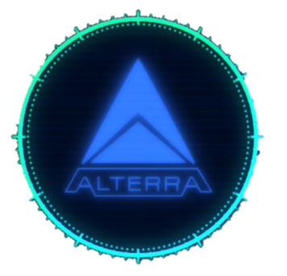
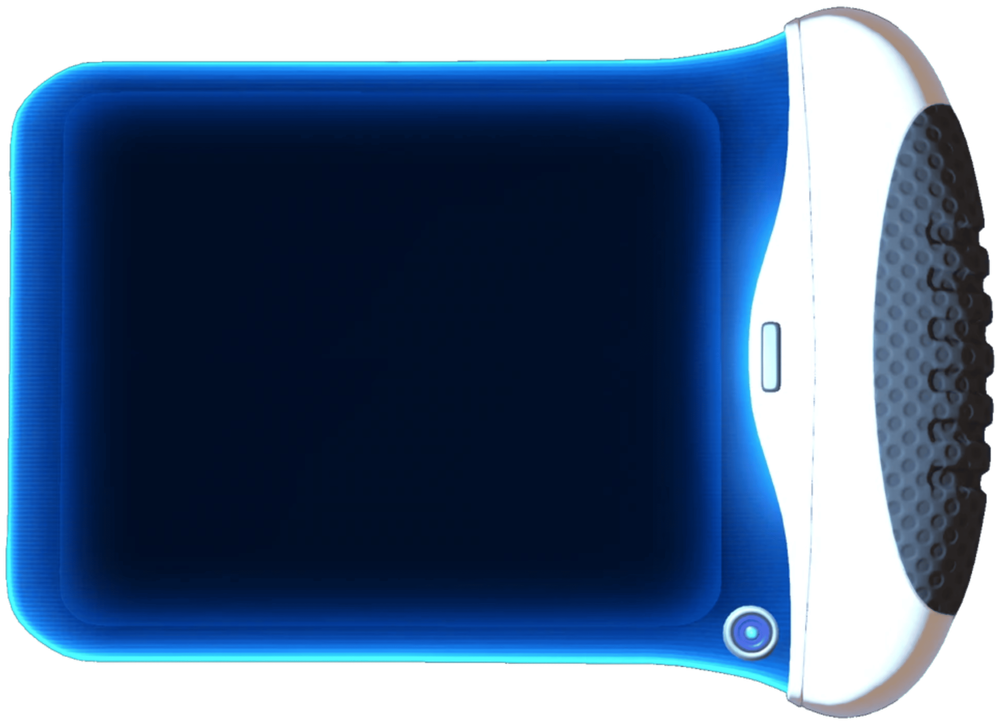

Boas vindas, mergulhador da Alterra.
Aqui, no Manual do 4546b você encontra um guia completo, de fã, para fã. Temos várias funções, que vão desde descrição detalhada de todas as criaturas, até um mapa interativo do jogo. Abra seu PDA no canto superior esquerdo, e comece a explorar!


🐟 Criaturas
🏗 Bases
😈 Leviatãs
🗺️ Biomas